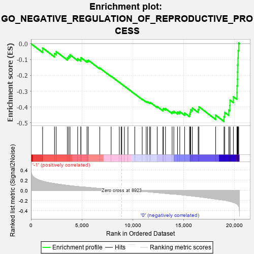
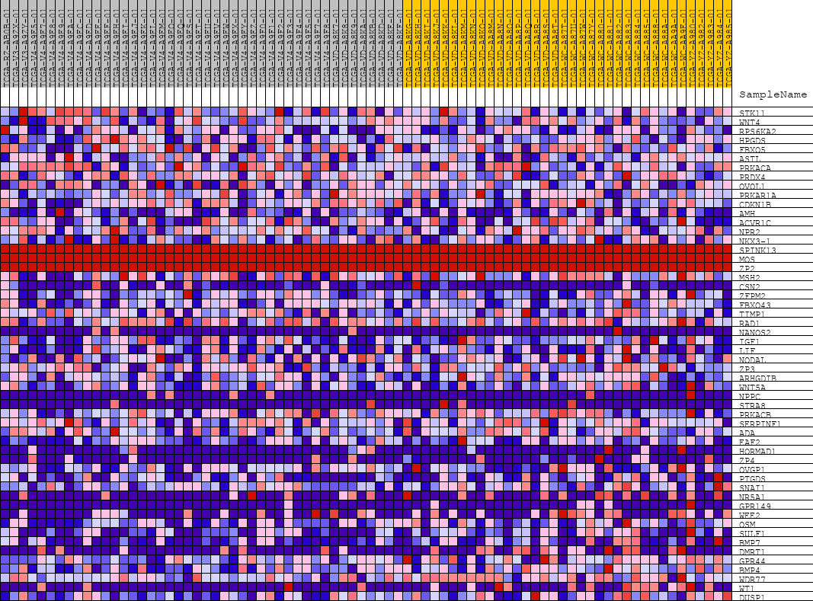
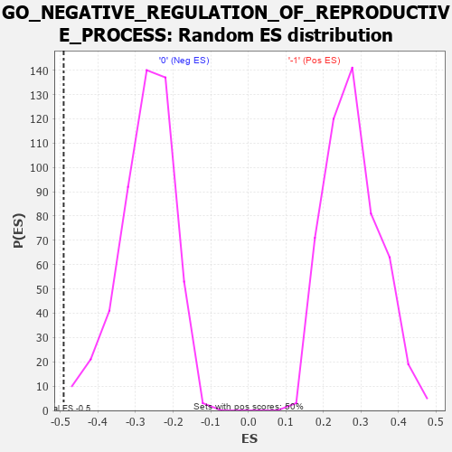

| | | Dataset | GSEAExpression.phenotype_uvm.cls#-1_versus_0 |
| Phenotype | phenotype_uvm.cls#-1_versus_0 |
| Upregulated in class | 0 |
| GeneSet | GO_NEGATIVE_REGULATION_OF_REPRODUCTIVE_PROCESS |
| Enrichment Score (ES) | -0.49137422 |
| Normalized Enrichment Score (NES) | -1.8009547 |
| Nominal p-value | 0.0020120724 |
| FDR q-value | 1.0 |
| FWER p-Value | 0.834 |
Table: GSEA Results Summary

Fig 1: Enrichment plot: GO_NEGATIVE_REGULATION_OF_REPRODUCTIVE_PROCESS
Profile of the Running ES Score & Positions of GeneSet Members on the Rank Ordered List
| PROBE | DESCRIPTION
(from dataset) | GENE SYMBOL | GENE_TITLE | RANK IN GENE LIST | RANK METRIC SCORE | RUNNING ES | CORE ENRICHMENT | | 1 | STK11 | na | | | 1143 | 0.182 | -0.0267 | No |
| 2 | WNT4 | na | | | 2316 | 0.134 | -0.0625 | No |
| 3 | RPS6KA2 | na | | | 2478 | 0.128 | -0.0499 | No |
| 4 | HPGDS | na | | | 3576 | 0.099 | -0.0877 | No |
| 5 | FBXO5 | na | | | 3709 | 0.096 | -0.0788 | No |
| 6 | ASTL | na | | | 3843 | 0.093 | -0.0705 | No |
| 7 | PRKACA | na | | | 4593 | 0.076 | -0.0949 | No |
| 8 | PRDX4 | na | | | 4904 | 0.069 | -0.0989 | No |
| 9 | OVOL1 | na | | | 4916 | 0.069 | -0.0884 | No |
| 10 | PRKAR1A | na | | | 5512 | 0.061 | -0.1077 | No |
| 11 | CDKN1B | na | | | 5639 | 0.059 | -0.1045 | No |
| 12 | AMH | na | | | 6769 | 0.038 | -0.1536 | No |
| 13 | ACVR1C | na | | | 7887 | 0.018 | -0.2053 | No |
| 14 | NPR2 | na | | | 8693 | 0.004 | -0.2441 | No |
| 15 | NKX3-1 | na | | | 8877 | 0.001 | -0.2529 | No |
| 16 | SPINK13 | na | | | 8935 | 0.000 | -0.2557 | No |
| 17 | MOS | na | | | 9193 | 0.000 | -0.2682 | No |
| 18 | ZP2 | na | | | 9541 | 0.000 | -0.2852 | No |
| 19 | MSH2 | na | | | 10211 | -0.005 | -0.3171 | No |
| 20 | CSN2 | na | | | 10945 | -0.017 | -0.3501 | No |
| 21 | ZFPM2 | na | | | 11337 | -0.024 | -0.3653 | No |
| 22 | FBXO43 | na | | | 11468 | -0.027 | -0.3674 | No |
| 23 | TIMP1 | na | | | 11670 | -0.030 | -0.3723 | No |
| 24 | RAD1 | na | | | 11767 | -0.032 | -0.3719 | No |
| 25 | NANOS2 | na | | | 12419 | -0.044 | -0.3967 | No |
| 26 | IGF1 | na | | | 12983 | -0.054 | -0.4156 | No |
| 27 | LIF | na | | | 13026 | -0.054 | -0.4089 | No |
| 28 | NODAL | na | | | 13234 | -0.059 | -0.4097 | No |
| 29 | ZP3 | na | | | 13888 | -0.071 | -0.4302 | No |
| 30 | ARHGDIB | na | | | 14056 | -0.075 | -0.4264 | No |
| 31 | WNT5A | na | | | 14422 | -0.079 | -0.4316 | No |
| 32 | NPPC | na | | | 14642 | -0.083 | -0.4290 | No |
| 33 | STRA8 | na | | | 15117 | -0.094 | -0.4372 | No |
| 34 | PRKACB | na | | | 15602 | -0.103 | -0.4443 | No |
| 35 | SERPINF1 | na | | | 15674 | -0.105 | -0.4309 | No |
| 36 | ADA | na | | | 15715 | -0.106 | -0.4159 | No |
| 37 | EAF2 | na | | | 15879 | -0.109 | -0.4064 | No |
| 38 | HORMAD1 | na | | | 16448 | -0.123 | -0.4144 | No |
| 39 | ZP4 | na | | | 16525 | -0.125 | -0.3981 | No |
| 40 | OVGP1 | na | | | 18172 | -0.169 | -0.4514 | No |
| 41 | PTGDS | na | | | 18991 | -0.191 | -0.4607 | Yes |
| 42 | SNAI1 | na | | | 19060 | -0.193 | -0.4331 | Yes |
| 43 | NR5A1 | na | | | 19456 | -0.210 | -0.4188 | Yes |
| 44 | GPR149 | na | | | 19568 | -0.215 | -0.3899 | Yes |
| 45 | WEE2 | na | | | 19584 | -0.216 | -0.3561 | Yes |
| 46 | OSM | na | | | 19916 | -0.235 | -0.3346 | Yes |
| 47 | SULF1 | na | | | 20265 | -0.268 | -0.3086 | Yes |
| 48 | BMP7 | na | | | 20275 | -0.270 | -0.2658 | Yes |
| 49 | DMRT1 | na | | | 20318 | -0.277 | -0.2235 | Yes |
| 50 | GPR44 | na | | | 20324 | -0.279 | -0.1790 | Yes |
| 51 | BMP4 | na | | | 20333 | -0.282 | -0.1342 | Yes |
| 52 | WDR77 | na | | | 20364 | -0.288 | -0.0896 | Yes |
| 53 | WT1 | na | | | 20392 | -0.296 | -0.0436 | Yes |
| 54 | DUSP1 | na | | | 20438 | -0.310 | 0.0039 | Yes |
Table: GSEA details [plain text format]

Fig 2: GO_NEGATIVE_REGULATION_OF_REPRODUCTIVE_PROCESS
Blue-Pink O' Gram in the Space of the Analyzed GeneSet

Fig 3: GO_NEGATIVE_REGULATION_OF_REPRODUCTIVE_PROCESS: Random ES distribution
Gene set null distribution of ES for GO_NEGATIVE_REGULATION_OF_REPRODUCTIVE_PROCESS